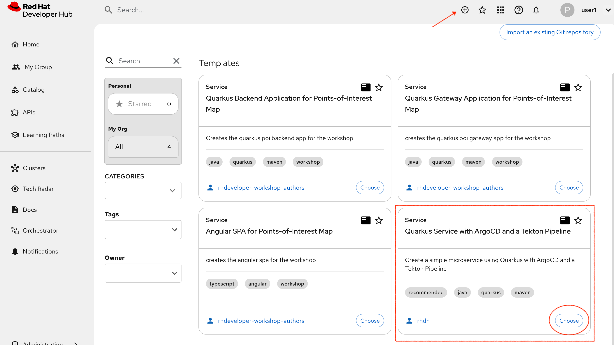
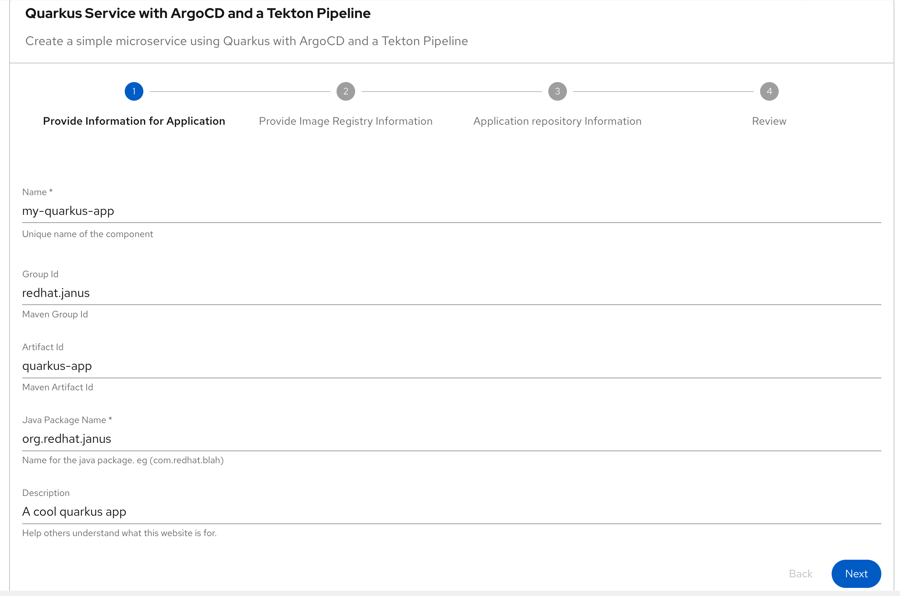
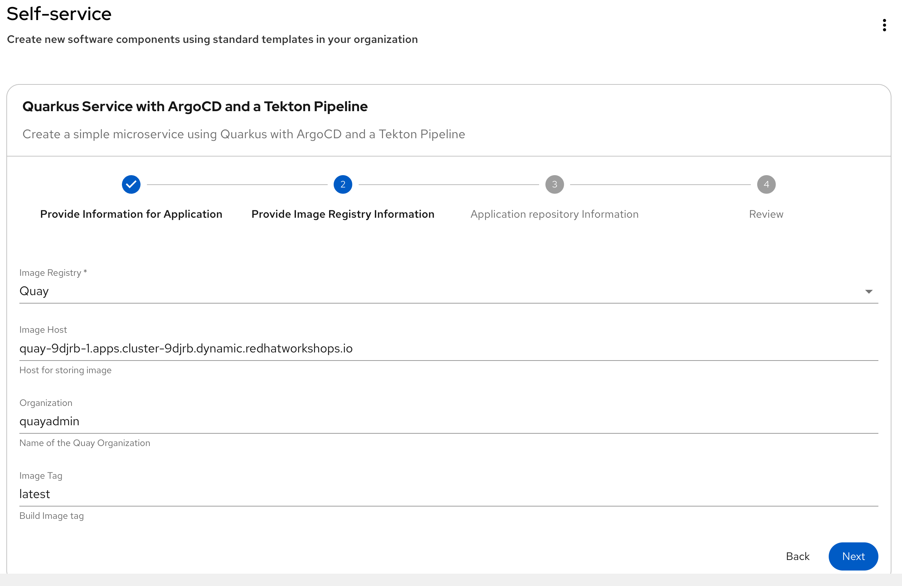
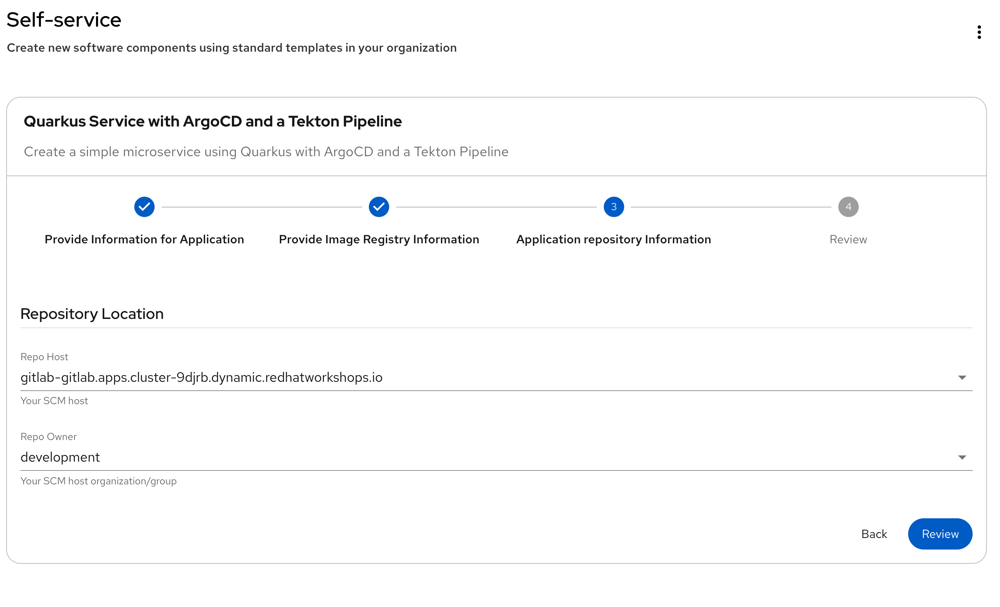
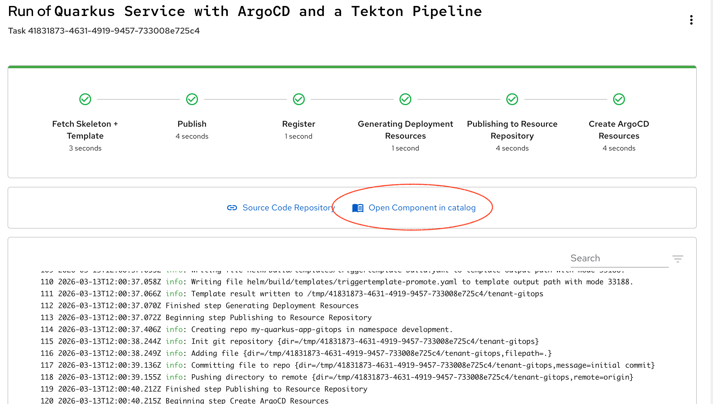
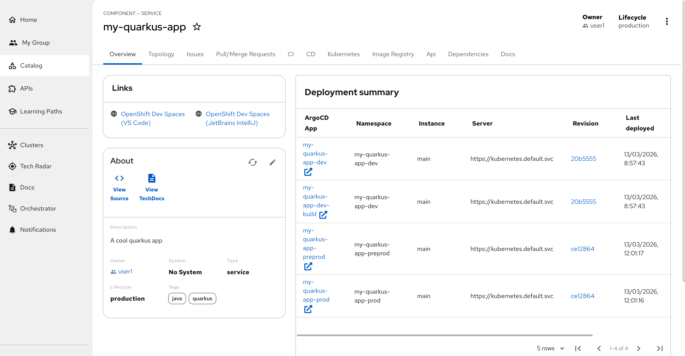
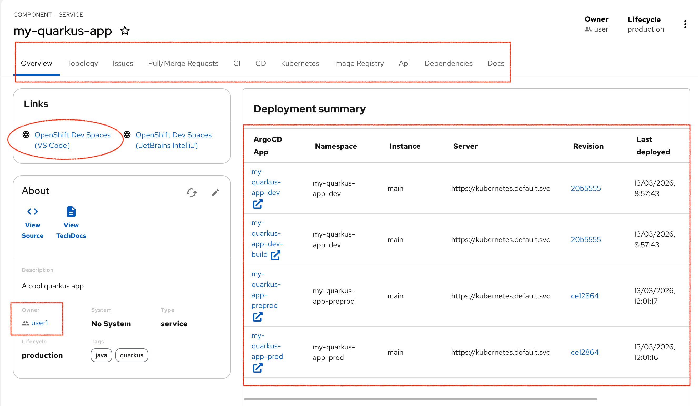
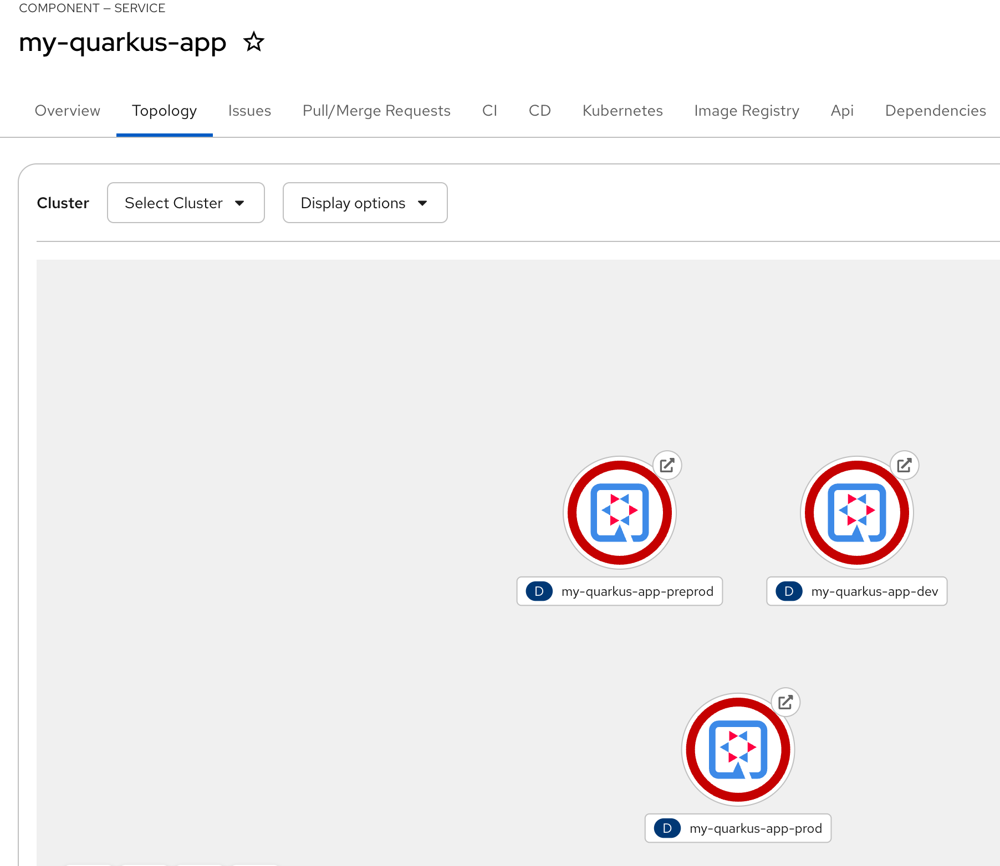
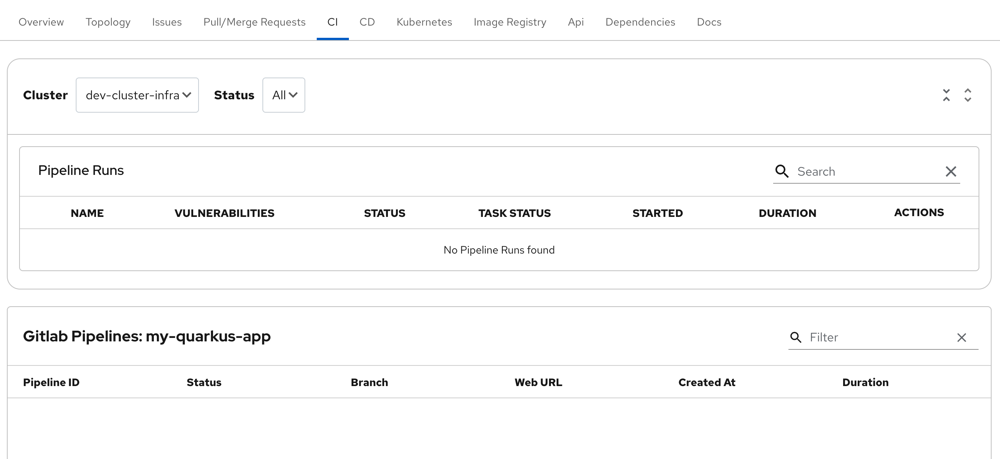

Running a Software Template
Running a Software Template (Golden Path)
As a new user of this RHDH our fast task is to execute our onboarding template to create our first project. This will create our GitLab source code repo and a GitOps repo that will orchestrate the creation of pipelines to build our application and define how the output will run.
The template will also determine how the application is registered back into RHDH and what features or integrated components will be accessible. Lets not dive into the details now, instead lets show how this can work.
Choosing and running a Template
So now lets starting adding some components. Use the Self-service (+) button to bring up the template choices, then choose Quarkus Service with ArgoCD and a Tekton Pipeline which will create those items.

Click Choose for the Quarkus template. The first page shows all the values we could set, but in this case they are all defaulted. Note that this template (by default) will create a new project and repo called my-quarkus-app

Click the Next button. On this page, choose Quay from the Image Registry options and all the defaults show below will be selected.

Click Next. This is our final page of the template and just confirms the new repo will be created in the GitLab location. The actual URL will vary according to the cluster name the lab is running on.

Click Review which confirms all the settings, then click Create to action the template

The template create process takes about 20 seconds while the Git repos are created and the source and GitOps code is pushed. When all the steps are complete, click on Open Component in Catalog this takes you back to the Catalog view centered on the newly created project.
New Quarkus Catalog Entry

So that template has initiated a number of changes which we can quickly summarize below on this Overview page.
Quick Tour
Firstly, there are a number of active tabs associated with the new Catalog component. We have observability over the deployment Topology, any Git Issues or Merges, we can view the pipelines status under CI and CD, check on Quay state under Image Registry, check API and project Dependencies and finally check what Documentation is available.

From the same view, note that the Owner of this is you user1 and we have direct access to the source code either via GitLab using View Source or via our OpenShift Dev Spaces VS Code IDE. The large panel on the right shows the ArgoCD activity for this project which has been setting up pipelines and deployments.
But its not working yet!
If you look through the tabs you will quickly notice two things.
On the Topology tab, 3 pods are trying to run but are red, so are failing. If we trouble shoot this issue further we will find that the pods are not running due to an Image Pull failure. Debug further and the issue is that the images do not exist, they haven’t been built yet.

Look on the CI tab, no pipelines have executed (which probably explains the lack of built images).

In the next section we will solve these problems, but to explain what has happened, all the pipeline setup has succeeded they just haven’t run.
The reason for this is that the pipelines have been set to be invoked on a code change in Git via a webhook and listener as shown in the original architecture picture. This webhook and listener detects Git changes like push, merge, pull request, tag. Because as yet we haven’t done any of those things, its not working.